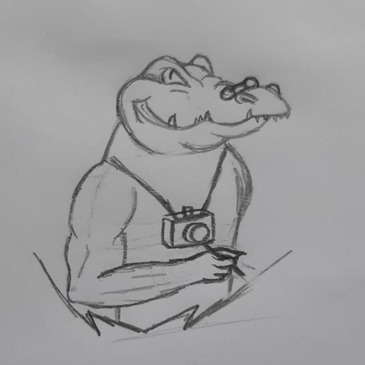
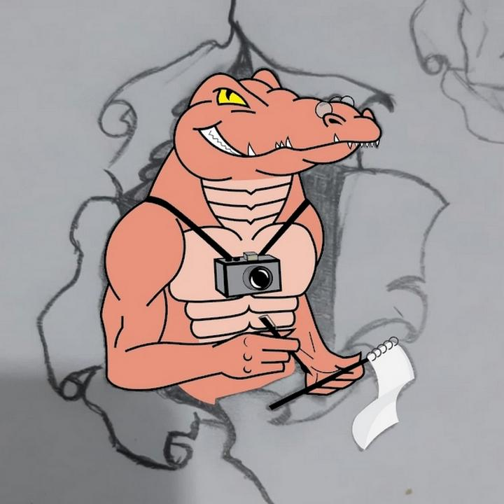

L'histoire du logo !
De la pensée aux coups de crayon
Un logo est la "vitrine" de n'importe quels entreprises, associations, clubs, ect. Il est donc primordial que celui-ci raconte une histoire ou tout simplement attire l'attention.
Le logo a été imaginé avec comme idée de réussir à réunir le côté "journalisme" avec les couleurs de Polytech Angers, c'est-à-dire : un alligator rose saumon prêt à en découdre !
Le logo s'est inspiré d'un personnage bien connu, vous l'avez ? Bien entendu ! Les petites lunettes sur le museau de l'alligator sont un clin d'oeil direct au fameux : Père Castor ! (Raconte nous une histoire)

Maintenant si on s'intéresse à la partie "finale" : design du logo, on doit tout d'abord remercier celui qui a passé de nombreuses heures dessus : Nicolas Fabre (Étudiant ingénieur à Polytech Clermont-Ferrand).
À peine la description du logo terminée, il s'est muni d'un crayon et de papiers pour commencer à le dessiner :

| Step 2 | Step 3 |
Une fois le croquis réalisé et validé par l'équipe, Nicolas Fabre s'est attelé à la dernière partie : la numérisation du logo. À l'aide d'un logiciel de design graphic (Adobe Illustrator), il a tout d'abord numérisé l'alligator avec la fameuse couleur rose saumon (Pantone 486C svp !), puis a ajouté les détails petit à petit, ce qui nous donne :
|  | |
| Step 4 | Step 5 |